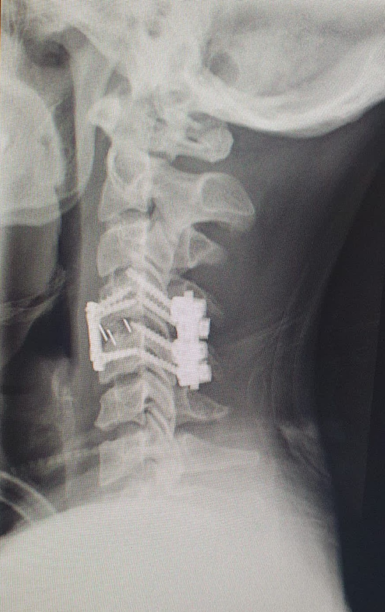
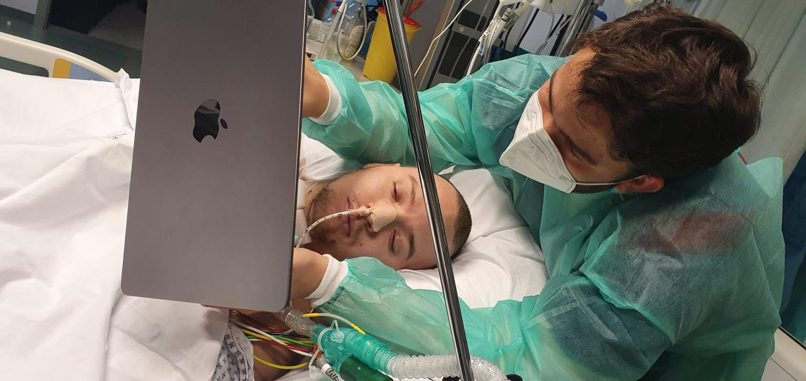
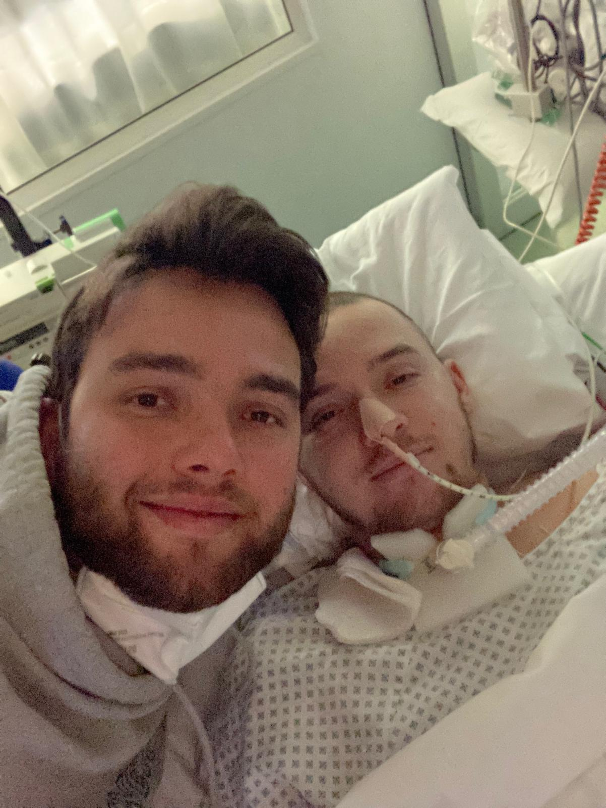
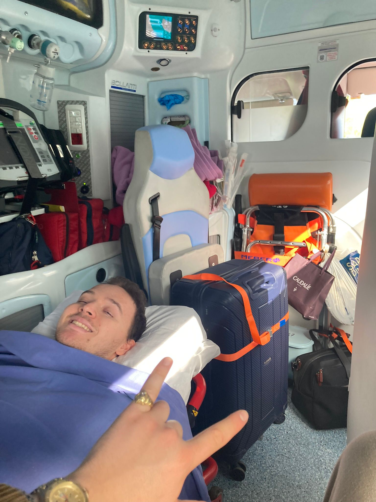
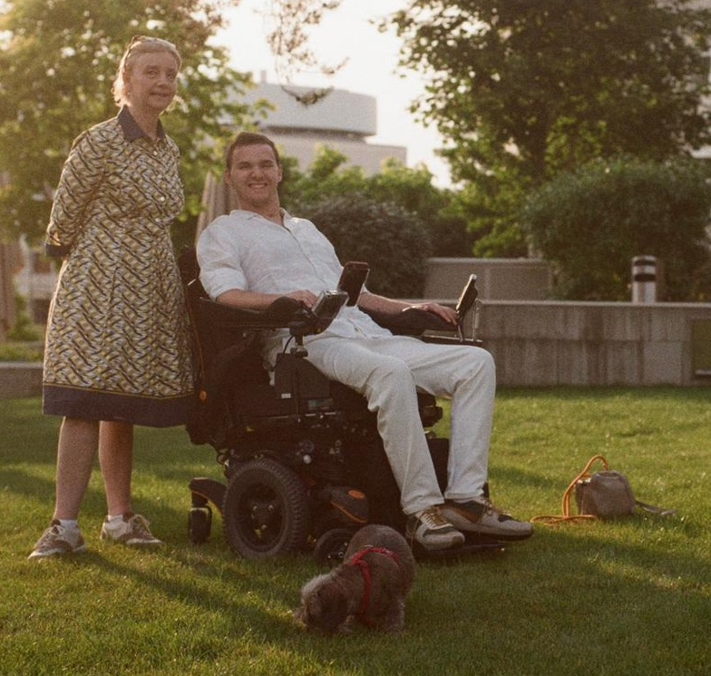

Awareness
Most people know nothing about spinal cord injury until it reaches them. We tell one true story loudly enough to change that.
Spinal cord injury · awareness · momentum
In 2022 Riccardo Barbieri broke his neck. He never stopped moving. Now a team runs marathons in his name to fund spinal cord research and stand with everyone still fighting.
Scroll
Why we exist
Most people know nothing about spinal cord injury until it reaches them. We tell one true story loudly enough to change that.
We raise funds for Spinal Research so the science that could let people walk again keeps moving. Recovery is a research problem.
Adaptive kit, real guides, honest community. Practical help for people living with paralysis and the families beside them.
Ricky's story
In December 2022, Riccardo Barbieri fell headfirst into a lake while exploring the mountains of Oman, fracturing his spinal cord at C4/C5. What began as a joyful adventure turned into a long road toward recovery and reinvention. The accident changed Ricky's life, and it exposed how little support, funding, and awareness exists for people with spinal cord injuries in Italy and beyond.
From a hospital bed through intensive rehabilitation, Ricky met the emotional, physical, and financial walls that everyone living with paralysis knows. Family and friends rallied around him with encouragement, hope, and small acts of kindness that made all the difference. He also hit the barriers head-on: limited access to adaptive sports equipment, expensive home modifications, and almost nothing written for life after injury.
Carried by that same compassion, and determined that no one should face this alone, Ricky and his twin brother built the Run4Ricky movement. We believe every person deserves the chance to reclaim independence, chase goals, and live fully, whatever their body can do.
The road so far
December 2022
A fall in Oman. Ricky fractured his spinal cord falling headfirst into a lake, then made it five hours back down the mountain to the ambulance.
Early January 2023
Coma and surgery. Ventilated and placed in a coma, Ricky underwent a 12-hour operation to stabilise his spine.

Mid January 2023
Airlift to Milan. After two weeks in Oman, Ricky was flown to Niguarda Hospital in Milan, and finally woke up.
January – March 2023
Intensive care. Two months in the ICU. Ricky survived heart attacks and a stroke, still unable to breathe on his own.

February 2023
First therapies. Moved to Niguarda's spinal cord unit, Ricky began respiratory and physical physiotherapy.

May 2023
On to Balgrist, Switzerland. After three and a half months at Niguarda, intensive rehabilitation began in Zurich.

Through 2023
Relearning movement. Ricky learned to stand, transfer, and walk mechanically, and cut his medications sharply. Stabilisation began.
October 2023
Home. After more than a year of hospitalisation and rehab, Ricky went home.

April 2024
Run4Ricky begins. Ricky and his twin brother founded the movement, to raise awareness and fund spinal cord research.
Why we run
Every kilometre we cover is for someone who can't yet take a single step. That is the whole point.
Share your wisdom
If you have lived with injury, recovery, or caregiving, your words help the next person. Send us a line.